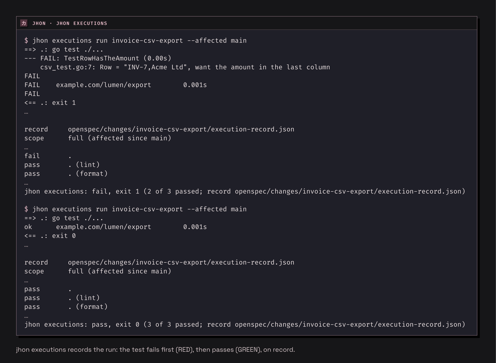
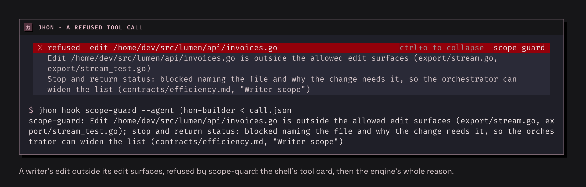
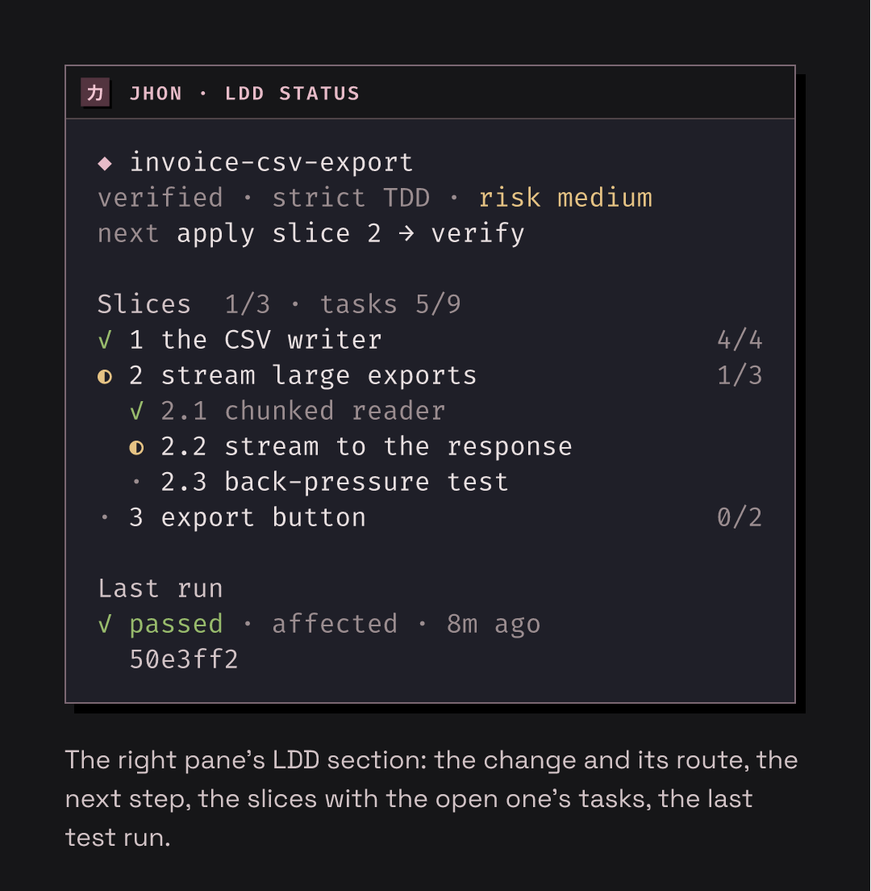

ldd
Proven slices
Intent, RED, GREEN, the slice commit, a verify, delivery. The pull request opens only with RED before GREEN and a passing verify of the tree the last run tested. jhon status
Freedom of execution within safety limits, and nothing delivered without evidence.
why jhon
Jhon takes a third way: the agent gets freedom of execution within safety limits, and nothing is delivered without evidence.
Guards judge every tool call of every agent. A destructive command is refused, an outward-facing one is asked, and you can widen what passes with a mode or a timed grant.
A change's test fails first (RED) and passes after (GREEN) in a recorded run. A change without that record does not get its pull request opened.
Leapfrog-Driven Development: value reaches the default branch in integrable, proven slices, with no ceremonies, and every rule stays only while the evidence backs it.
Not a runtime or a model, not a change to your own setup, not CI. It runs inside Claude Code (jhon start) or pi (jhon start pi).
how it works
One orchestrator plans the slices and hands work to focused agents, jhon-scout, jhon-builder, jhon-checker and the Prism reviewers, while the jhon binary runs the guards and keeps the records.

ldd
Intent, RED, GREEN, the slice commit, a verify, delivery. The pull request opens only with RED before GREEN and a passing verify of the tree the last run tested. jhon status

guards
Seven guards, the same in both runtimes. What they refuse stays refused; what they ask, you answer, or your mode and grants answer for you. jhon mode, jhon grant
prism review
Safety, failure, clarity and behavior review a frozen diff; a challenger tries to refute each finding and an arbiter confirms the ones that stand. In pi it runs natively in one tool call. jhon review start

shell + dashboard
pi with Jhon's shell in rose ink: LDD status, agents, jobs and usage a key away. A read-only dashboard on 127.0.0.1:7480 for sessions with their audits, changes and usage. jhon dashboard
get started
curl -fsSL https://raw.githubusercontent.com/jachavarro2004/jhon-agent/main/install.sh | shjhon setup# runtimes, integrations, checksjhon start# Claude Code · or: jhon start pi
irm https://raw.githubusercontent.com/jachavarro2004/jhon-agent/main/install.ps1 | iexjhon setup# runtimes, integrations, checksjhon start# Claude Code · or: jhon start pi
jhon update verifies sha256 and the release's cosign signature.claude) for the Claude Code runtime; node for pijhon setup checks each one and says how to fix a missing one.jhon doctor: every health check, no network calljhon update, --check, --rollbackread more
sponsor
Sponsoring pays for the time that goes into each proven release, and keeps Jhon free for everyone.
On GitHub Sponsors: a tier, or an amount of your own.